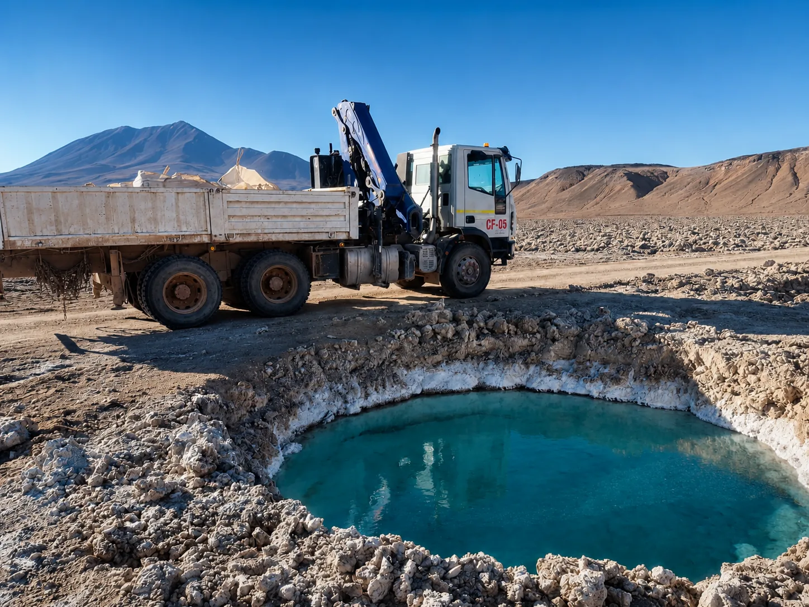
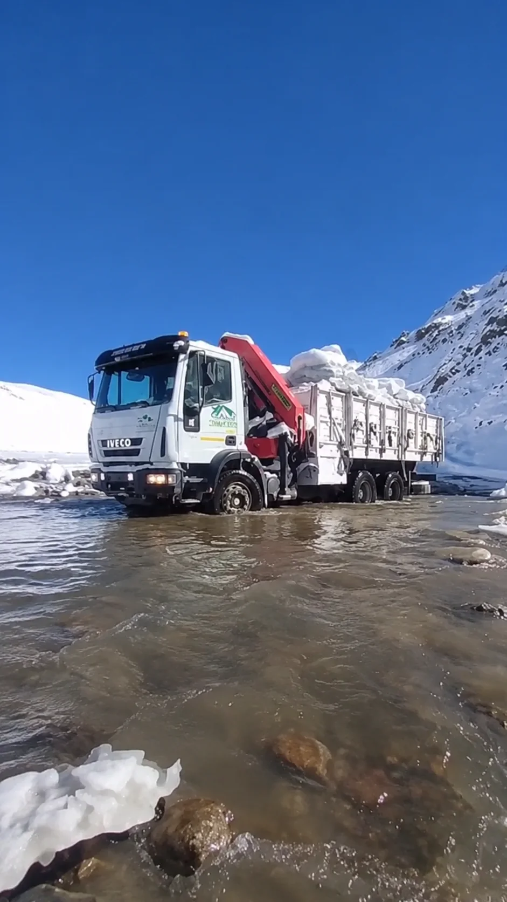
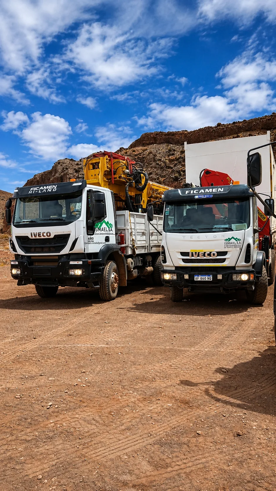

Logística para exploración, explotación y perforación minera en San Juan
Una campaña en la alta cordillera se sostiene con logística: agua en el frente de perforación, equipos que llegan, personal que entra y sale, y abastecimiento que no se corta. ISMAEL S.A. resuelve toda esa logística con flota propia, en los proyectos mineros de San Juan, desde hace más de 20 años. Bases en Rawson y Calingasta.
Sin logística, la campaña se frena
Explorar o perforar en la cordillera es operar lejos de todo. Sin agua, la perforadora para. Sin insumos, el frente se detiene. Sin la gente en el lugar, el turno no arranca. Cada eslabón de la campaña depende de que la logística no falle, en un terreno donde el camino ya es de por sí un desafío.
ISMAEL S.A. acompaña la campaña completa: llevamos el agua a la perforación, movemos los equipos, abastecemos los campamentos y trasladamos al personal, con flota propia y gente que conoce cada ruta de la cordillera sanjuanina. Un solo operador para toda la logística del proyecto.


Donde está el proyecto, estamos nosotros
Desde el primer campamento de exploración hasta la fase de explotación, ISMAEL S.A. opera en el frente: con la flota, la gente y los tiempos que exige la alta cordillera.
No mandamos un camión y nos vamos. Sostenemos la logística de la campaña durante toda su duración, con la continuidad que un proyecto minero necesita.
Más de una unidad, cuando la campaña lo pide
Una campaña de perforación no siempre se resuelve con un solo camión: hay que mover el equipo de sondaje, sostener el abastecimiento y tener respaldo si algo falla. Trabajamos con más de una unidad propia en el mismo frente, coordinadas por el mismo operador.

Todo lo que la operación necesita en el frente
Desde la exploración hasta la explotación, cada servicio de ISMAEL S.A. sostiene una parte de la campaña. Coordinados por un mismo operador, con la misma flota y la misma gente.
Agua para la perforación
Aguateros de 9.000 a 20.000 litros abasteciendo los frentes de perforación y el consumo de la operación.
Ver transporte de agua →Transporte de equipos e insumos
Traslado de maquinaria, materiales y módulos hasta el proyecto, incluidas cargas sobredimensionadas con permisos.
Ver transporte minero →Abastecimiento en zonas remotas
Logística de última milla hasta los campamentos y frentes de difícil acceso, por caminos no convencionales.
Ver abastecimiento →Traslado de personal
Rotaciones programadas y movimientos del personal de la campaña en camionetas 4×4 preparadas para la montaña.
Ver traslado de personal →Hidrogrúas en el frente
Grúas Palfinger para carga y descarga de equipos y estructuras directamente en el punto de operación.
Ver hidrogrúas →Soporte operativo en la campaña
Un equipo propio presente en el frente, coordinando la logística en terreno durante toda la campaña.
Ver soporte operativo →Un solo operador para toda la campaña.
De la exploración a la explotación, la misma flota y la misma gente sostienen la logística de tu proyecto. Menos proveedores que coordinar, una sola responsabilidad en el frente.
Por qué confiar la logística de tu campaña a un operador sanjuanino
La diferencia entre un operador local y uno de afuera se mide en horas de movilización y en quién responde cuando algo tiene que resolverse en el frente, sin demoras.
Flota propia, con respaldo
Control directo de cada unidad. Si una falla, según disponibilidad sale otra: la campaña no se frena.
Presencia local en San Juan
Bases en Rawson y Calingasta: movilización en horas, sin depender de operadores de otras provincias.
Personal propio y acreditado
Conductores y operadores certificados, con experiencia real en minería y acreditaciones ante entes reconocidos por la OAA.
Seguros y habilitaciones al día
ART, responsabilidad civil, seguro de carga y habilitaciones de transporte.
+20 años en alta cordillera
Más de 20 años en frentes de exploración, perforación y proyectos mineros de San Juan.
Trazabilidad total
Monitoreo GPS de la flota en cada recorrido: siempre sabés dónde está lo que mueve tu campaña.
¿Estás planificando una campaña de exploración o perforación?
Contanos en qué etapa está tu proyecto y qué necesitás mover al frente. Te respondemos con una propuesta concreta.
Ver todos los servicios →